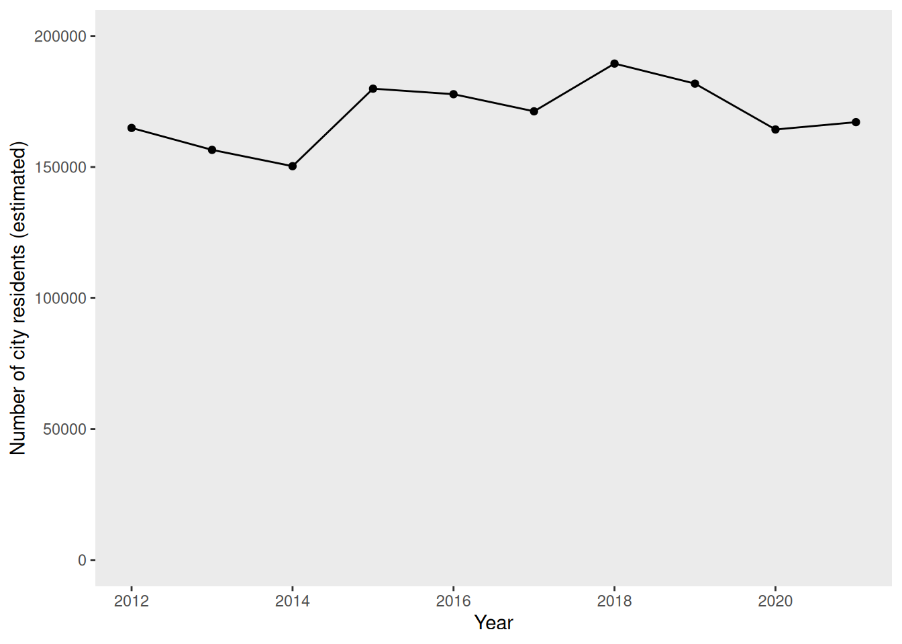
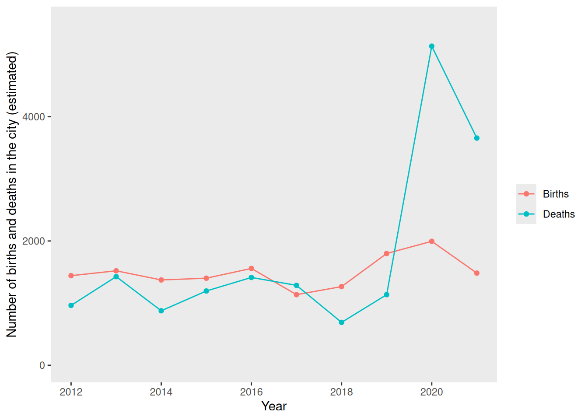
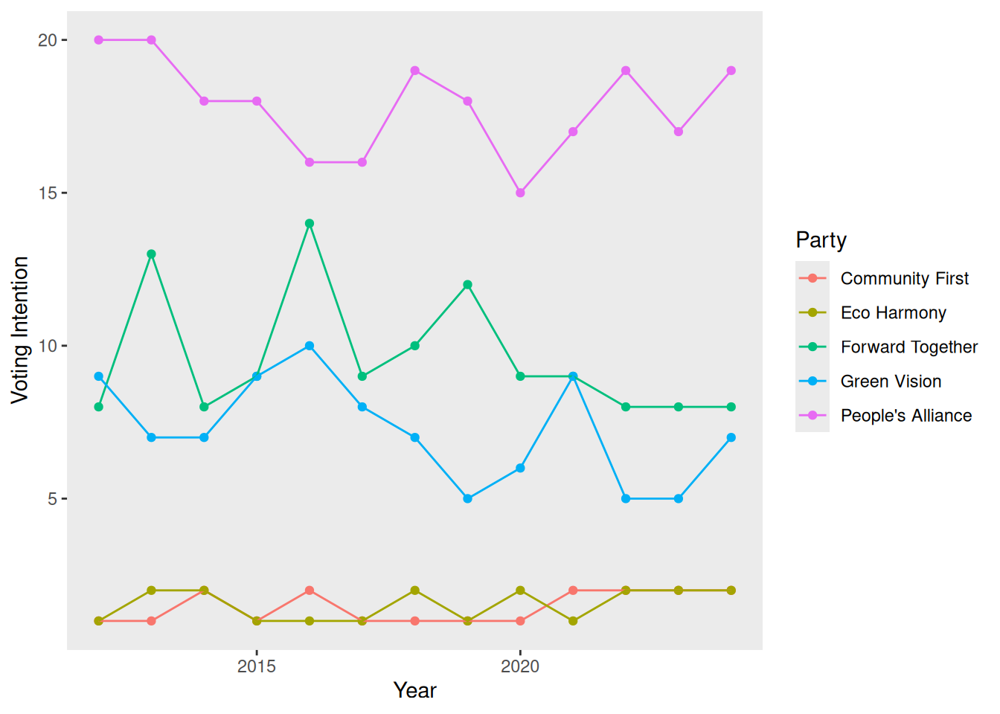
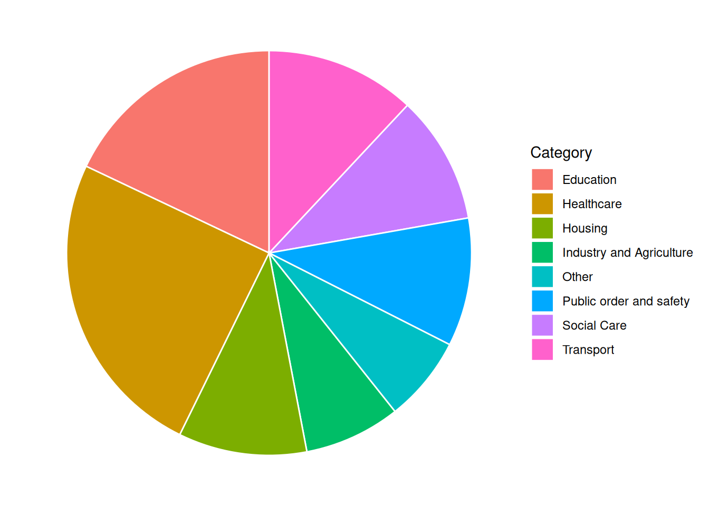
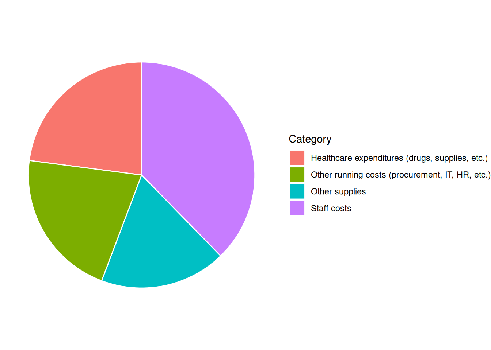

7 Group E
Rosmakirk Beacon
Breaking News
Concerns Over Possible Outbreak of Listeriosis in Rosmakirk
22 February, 2026

Anxiety intensifies in Rosmakirk as health officials investigate a potential outbreak of Listeriosis, raising alarm bells across the region. Though yet to be formally confirmed as a pandemic, suspicions have intensified following a recent unsettling surge in patients presenting with symptoms indicative of Listeriosis.
Listeriosis is caused by the bacterium Listeria monocytogenes. It is usually contracted by eating contaminated food, such as unpasteurized dairy products, deli meats, or produce. Symptoms include fever, muscle aches, nausea, and diarrhea. Residents of Rosmakirk experiencing any of these symptoms are advised to contact their GP or dial 111 for health advice.
In a press release, the director of the Horizon NHS in Rosmakirk noted a astonishing uptick in individuals reporting symptoms consistent with those associated with Listeriosis. Fears were first raised when the local GPs began reporting an unusual increase in patients with symptoms of Listeriosis. While investigations are still ongoing, the possibility of a pandemic outbreak hangs over, prompting concern from health agencies.
In response to the developing concerns, health officials have begun several emergency protocols, and Rosmakirk have convened an Emergency Pandemic Response Team, which will be meeting on 2026-02-27 and attempting to find solutions that will stop the spread of the pandemic in Rosmakirk.
The First Minister assured residents that authorities are pursuing every lead in their efforts to safeguard public health, and furthermore urged residents to remain vigilant and cooperate with health directives from the Rosmakirk City Council. A statement released by the First Minister’s office read: “While there is no confirmation of an outbreak at this time, we are taking this situation very seriously.”
The people in Rosmakirk have already begun to weigh the possibility of a pandemic; potential consequences such as school closures, economic repercussions, and strain on healthcare resources, have sparked apprehension among residents, underscoring the need for swift and decisive action.
Contact Information for Further Updates:
More information will be posted on the Rosmakirk website as the situation develops: https://www.RosmakirkCouncil.co.uk
The Rosmakirk Emergency Pandemic Response Team can be contacted on +44 01343 8413 2822 or at pandemic_response@Rosmakirk.co.uk
About the Author:
Hawraa al-Diab is a health correspondent at the Rosmakirk Beacon, specializing in public health and safety issues.She can be contacted at ha1533@RosmakirkBeacon.com.

Rosmakirk was granted city status in 1874. Located near Glenorchy Gorge, Rosmakirk is noted for its well-preserved historic buildings. Major industries in the city include biotechnology, automotive, and agriculture.
Rosmakirk is well-served by public transport: there are 2 bus companies operating routes that cover the city and outlying areas, and road links to other major cities (the A35 to Elgin and the the A3 to Melrose.) Rosmakirk is further connected to regional towns and villages by rail services from the Rosmakirk railway station. Rosmakirk is also served by Rosmakirk Airport, which is 6 miles from the city centre and which offers daily flights to Nice, Marseille, and Lyon.
Notable buildings in the city include Rosmakirk Castle, Rosmakirk Cathedral, and Cragwood House. Rosmakirk also has a number of historic landmarks and a nature preserve. The Rosmakirk kite festival is held annually in July, and tourists also flock to Rosmakirk to take river cruises in autumn. Rosmakirk is also noted as a hub of local arts and culture, with Northgate Theatre and Ede Hall drawing in crowds for performances from local and international artists. The city is renowned for sports, with the Eagles and Crows teams representing the city for field hockey and rugby league, respectively.
Some of the key Rosmakirk features are summarized in the list below.
Public Facilities/Community Amenities
- Schools:
- 7 primary schools
- 6 secondary schools
- 1 college
- Nurseries: 11
- Care Homes: 6
- Restaurants and Cafes: 143
- Parks and Playgrounds: 5
- Libraries: 5
- Gyms and Sports Facilities: 10
- Prisons: 3
- Police and Fire Stations: 3
- Surgeries and pharmacies: 10
- Hospital: the Horizon NHS
Refer to the “Data” tab for information about the city demographics, voting and polling data, and more information about the hospital.
7.0.1 Fact Sheet and General Information
7.0.2 Clinical Microbiology and Diagnosis Resources

Tip
The following list of references is provided as a starting place for you to begin exploring various aspects of Listeria monocytogenes biology, diagnostics, epidemiology, and treatment. However, this is by no means an exhaustive list: you should further explore the relevant peer-reviewed literature independently.
Campylobacter: Estimating the burden of gastrointestinal infection in Scotland using data linkage
Campylobacter information and guidance (Food standards Scotland)
Gölz, Greta et al. “Relevance of Campylobacter to public health–the need for a One Health approach.” International journal of medical microbiology : IJMM vol. 304,7 (2014): 817-23.
MacRitchie, L A et al. “Consumer acceptability of interventions to reduce Campylobacter in the poultry food chain.” Food control vol. 35,1 (2014): 260-266. doi:10.1016/j.foodcont.2013.06.005
Bessell, Paul R et al. “Geographic determinants of reported human Campylobacter infections in Scotland.” BMC public health vol. 10 423. 15 Jul. 2010, doi:10.1186/1471-2458-10-423
Scott, Elizabeth. “Food safety and foodborne disease in 21st century homes.” The Canadian journal of infectious diseases = Journal canadien des maladies infectieuses vol. 14,5 (2003): 277-80.
Bessell, Paul R et al. “Geographic determinants of reported human Campylobacter infections in Scotland.” BMC public health vol. 10 423. 15 Jul. 2010, doi:10.1186/1471-2458-10-423
Tang, Yizhi et al. “Antibiotic resistance trends and mechanisms in the foodborne pathogen, Campylobacter.” Animal health research reviews vol. 18,2 (2017): 87-98.
Valenčak-Ignjatić, Ivana et al. “Campylobacter jejuni subdural hygroma infection in a 2-year old boy: case report and a brief literature review.” BMC infectious diseases vol. 22,1 700. 20 Aug. 2022, doi:10.1186/s12879-022-07680-0
Lévesque, Simon et al. “Campylobacteriosis in urban versus rural areas: a case-case study integrated with molecular typing to validate risk factors and to attribute sources of infection.” PloS one vol. 8,12 e83731. 26 Dec. 2013, doi:10.1371/journal.pone.0083731
LaGier, Michael J et al. “A real-time multiplexed PCR assay for rapid detection and differentiation of Campylobacter jejuni and Campylobacter coli.” Molecular and cellular probes vol. 18,4 (2004): 275-82.
Ferrari, Sevinc et al. “Validation of PCR methods for confirmation and species identification of thermotolerant Campylobacter as part of EN ISO 10272 - Microbiology of the food chain - Horizontal method for detection and enumeration of Campylobacter spp.” International journal of food microbiology vol. 388 (2023): 110064.
Ojima-Kato, Teruyo et al. “Proteotyping of Campylobacter jejuni by MALDI-TOF MS and Strain Solution Version 2 Software.” Microorganisms vol. 11,1 202. 12 Jan. 2023, doi:10.3390/microorganisms11010202
Hong, Seung-Hwan et al. “Gold Nanoparticle and Polymerase Chain Reaction (PCR)-Based Colorimetric Assay for the Identification of Campylobacter spp. in Chicken Carcass.” Food science of animal resources vol. 43,1 (2023): 73-84. doi:10.5851/kosfa.2022.e59
Bessell, Paul R et al. “Using sequence data to identify alternative routes and risk of infection: a case-study of campylobacter in Scotland.” BMC infectious diseases vol. 12 80. 1 Apr. 2012, doi:10.1186/1471-2334-12-80
Llarena, Ann-Katrin et al. “Whole-Genome Sequencing in Epidemiology of Campylobacter jejuni Infections.” Journal of clinical microbiology vol. 55,5 (2017): 1269-1275. doi:10.1128/JCM.00017-17
Joseph, Lavin A et al. “Comparison of Molecular Subtyping and Antimicrobial Resistance Detection Methods Used in a Large Multistate Outbreak of Extensively Drug-Resistant Campylobacter jejuni Infections Linked to Pet Store Puppies.” Journal of clinical microbiology vol. 58,10 e00771-20. 22 Sep. 2020, doi:10.1128/JCM.00771-20
Bishop, H et al. “Bacteriological Survey of Fresh Minced Beef on Sale at Retail Outlets in Scotland in 2019: Three Foodborne Pathogens, Hygiene Process Indicators, and Phenotypic Antimicrobial Resistance.” Journal of food protection vol. 85,9 (2022): 1370-1379.
Lopes, Bruno S et al. “Nationwide Stepwise Emergence and Evolution of Multidrug-Resistant Campylobacter jejuni Sequence Type 5136, United Kingdom.” Emerging infectious diseases vol. 25,7 (2019): 1320-1329.
Sheppard, Samuel K et al. “Evolution of an agriculture-associated disease causing Campylobacter coli clade: evidence from national surveillance data in Scotland.” PloS one vol. 5,12 e15708. 15 Dec. 2010, doi:10.1371/journal.pone.0015708
Sheppard, Samuel K et al. “Campylobacter genotypes from food animals, environmental sources and clinical disease in Scotland 2005/6.” International journal of food microbiology vol. 134,1-2 (2009): 96-103.
Dessouky, Yara El et al. “Genomic insights into zoonotic transmission and antimicrobial resistance in Campylobacter jejuni from farm to fork: a one health perspective.” Gut pathogens vol. 14,1 44. 5 Dec. 2022, doi:10.1186/s13099-022-00517-w
Hadiyan, Maryam et al. “Prevalence, antimicrobial resistance, virulence gene profile and molecular typing of Campylobacter species isolated from poultry meat samples.” Veterinary medicine and science vol. 8,6 (2022): 2482-2493.
Ocejo M, Oporto B, Lavín JL, Hurtado A. Monitoring within-farm transmission dynamics of antimicrobial-resistant Campylobacter in dairy cattle using broth microdilution and long-read whole genome sequencing. Sci Rep. 2023;13(1):12529. Published 2023 Aug 2. doi:10.1038/s41598-023-39588-3
Rodrigues JA, Blankenship HM, Cha W, et al. Pangenomic analyses of antibiotic-resistant Campylobacter jejuni reveal unique lineage distributions and epidemiological associations. Microb Genom. 2023;9(8):mgen001073. doi:10.1099/mgen.0.001073
Katz A, Porte L, Weitzel T, et al. Whole-genome sequencing reveals changes in genomic diversity and distinctive repertoires of T3SS and T6SS effector candidates in Chilean clinical Campylobacter strains. Front Cell Infect Microbiol. 2023;13:1208825. Published 2023 Jul 13. doi:10.3389/fcimb.2023.1208825
Emails
Your committee has recently received a great deal of correspondence regarding the pandemic in Rosmakirk. A representative sample of these e-mails is shown below.
News/Blog Posts
Your committee has also been monitoring news and published blog posts about the pandemic in Rosmakirk, in order to better gauge public opinion. A representative sample of these is shown below.
Pandemic Report
Briefing:
Based on collated hospital reports and death certificates, it is believed that there have been 22 deaths due to Listeriosis in Rosmakirk thus far
There are currently 585 patients in the Horizon NHS with confirmed Listeriosis, or symptoms consistent with Listeriosis
There are currently 30 patients currently in the ICU with confirmed Listeriosis
City Demographics, Polling, and Budget
The current population of Rosmakirk (as of 2024) is 161981. The demographic data for the city is shown below.


The current provost of Rosmakirk was elected in 2020, as a member of a popular political party who made a number of election promises regarding a “Green New Deal” for Rosmakirk.

There are currently 146 elected councillors, representing the political parties in Rosmakirk as follows:
| Political Party | Number of Seats |
|---|---|
| Community First | 10 |
| Forward Together | 12 |
| People's Alliance | 25 |
| Green Vision | 12 |
| Eco Harmony | 8 |
The overall budget (expenditures) for the previous financial year was £428313648. A summary of expenditures by category for this financial year is shown below.

In addition to these expenditures, the city council has a budget for an emergency fund, projected to be £89521 for the current financial year.
Hospital and Hospital Budget
The annual operating budget for the last financial year was £3.6 million, and average expenditures are shown by category in the figure below.

- You can find more key information about the main hospital in Rosmakirk, the Horizon NHS in the hospital dashboard.
Epidemiological Data
A team of scientists working together have in a PHS lab have isolated and cultured Listeria monocytogenes (following standard procedures) from a number of patient samples taken during this outbreak; isolated DNA from these cultures; sequenced this DNA using an Illumina MiSeq platform; assembled the short paired-end reads; and compared these assemblies to the extant Listeria genome sequences available in the NCBI databases. The results of these experiments are summarised in the table below.
| Patient | NCBI accession of closest database match |
|---|---|
| 1 | GCA_015583955.1 |
| 2 | GCA_022215545.1 |
| 3 | GCA_015583955.1 |
| 4 | GCA_015444825.1 |
| 5 | GCA_015583955.1 |
| 6 | GCA_015444945.1 |
| 7 | GCA_015444945.1 |
| 8 | GCA_015444945.1 |
| 9 | GCA_015444945.1 |
| 10 | GCA_015444825.1 |
Hospital Info
The Horizon NHS, built in 2008, is the main hospital in Rosmakirk.
The Horizon NHS has units specialising in maternity care, coronary care, gynecology, gastroenterology and an ear, nose, and throat clinic.

Hospital Capacity
Number and Capacity of Hospital Beds
Hospital beds (general)
144
Hospital beds (ICU)
15
Isolation beds
9
Average bed occupancy (%)
86%
Average ICU bed occupancy (%)
93%
Average isolation bed occupancy (%)
97%
Hospital Staffing Levels
Number of hospital staff
115
Number of hospital support staff
21
Clinical micro lab capacity (# tests/month)
1829
Key Performance Indicators
A&E Statistics
Statement from Horizon NHS: As part of the Horizon NHS’s ongoing commitment to excellence, the hospital diligently monitors key performance indicators and strives to meet established targets. While progress has been made, we acknowledge that certain goals remain unmet. We are actively working to address these challenges and enhance patient care.
Key Performance Targets:
Waiting time for an ambulance (category 2 event) should be no more than 18 minutes
95% or more of all patients waiting in A&E should be seen in less than 4 hours
85% of all patients waiting for cancer treatment should be seen within 62 days
Average number of admissions to A&E (monthly)
7809
Average % of patients waiting >4 hours in A&E
71%
Ambulance response times (minutes)
66 min
A&E Wait Times Metrics
% of patients waiting <62 days for referral (any)
74%
% of patients waiting <62 days for cancer treatment
62%
Number of patients waiting for elective surgery
7102
Infection Control Metrics
The Horizon NHS hospital strives to meet stringent targets for infection control and antibiotic stewardship to ensure patient safety and combat antimicrobial resistance. Infection control protocols are critical in maintaining high standards of hygiene and patient care. Similarly, antibiotic stewardship programs are essential for optimizing the use of antimicrobials, thereby reducing the risk of resistance and ensuring effective treatments for future generations.
There were 2 more hospital-acquired MRSA infections in 2026 than there were in 2025.
There were 8 more hospital-acquired Clostridiodes difficile infections in 2026 than there were in 2025.
There were the same number of hospital-acquired Candida auris infections in 2025 and 2026.
Hospital-acquired MRSA cases (trend)
5
Hospital-acquired C. difficile cases (trend)
10
Hospital-acquired Candida auris cases (trend)
5
Antibiotic prescriptions judged appropriate (%)
81%
Antibiotic de-escalation rate (%)
10%
Prevalence of MDR-resistant organisms (%)
39%
Community Health Data
The Horizon NHS monitors the prevalence of COVID-19 and other viruses in the community to ensure they are prepared for potential surges in patient admissions, enabling them to allocate resources and staff efficiently. By tracking these trends, the hospital can implement timely public health interventions and provide accurate information to the community to mitigate the spread of infections. Additionally, continuous monitoring helps in identifying emerging outbreaks early, allowing for a rapid response that minimizes the impact on public health and healthcare services.
There were 21 fewer COVID-19 cases this week than in the previous week.
We are seeing an increase in infections caused by other respiratory viruses (e.g., influenza, adenovirus, rhinovirus, RSV).
COVID-19 cases (weekly)
72
Other respiratory virus infections (weekly)
986
SARS-CoV2 vaccination rate (booster campaign)
23%
Childhood vaccination rate (DTaP/IPV/Hib/HepB)
95%
City Pandemic Planning Resources
COVID-19 health protection guidance released by Public Health Scotland
Tackling antimicrobial resistance 2019–2024: The UK’s five-year national action plan
UK One Health Report - Joint report on antibiotic use and antibiotic resistance, 2013–2017
Scottish One Health Antimicrobial Use and Antimicrobial Resistance in 2021
Hospital Pandemic Preparedness and Planning
Mer, Mervyn et al. “Critical Care Pandemic Preparation: Considerations and Lessons Learned from COVID-19.” Critical care clinics vol. 38,4 (2022): 761-774.
Tacconelli, Evelina et al. “Challenges of data sharing in European Covid-19 projects: A learning opportunity for advancing pandemic preparedness and response.” The Lancet regional health. Europe vol. 21 (2022): 100467.
Adelaja, I., Sayma, M., Walton, H., McLachlan, G., de Boisanger, J., Bartlett-Pestell, S., Roche, E., Gandhi, V., Wilson, G. J., Brookes, Z., Yeen Fung, C., Macfarlane, H., Navaratnam, A., James, C., Scolding, P., & Sara, H. (2020). A comprehensive hospital agile preparedness (CHAPs) tool for pandemic preparedness, based on the COVID-19 experience. Future healthcare journal, 7(2), 165–168.
Communications Resources
Matta, G. Science communication as a preventative tool in the COVID19 pandemic. Humanit Soc Sci Commun 7, 159 (2020).
Abdool Karim, Salim S. “Public understanding of science: Communicating in the midst of a pandemic.” Public understanding of science (Bristol, England) vol. 31,3 (2022): 282-287.
Royan, Regina et al. “Use of Twitter Amplifiers by Medical Professionals to Combat Misinformation During the COVID-19 Pandemic.” Journal of medical Internet research vol. 24,7 e38324. 22 Jul. 2022, doi:10.2196/38324
Tait, Margaret E et al. “Serving the public? A content analysis of COVID-19 public service announcements airing from March - December of 2020 in the U.S.” Preventive medicine reports vol. 29 (2022): 101971.
Epidemic Calculator
You may choose to include mathematical modeling as part of your decision making (for example, using an epidemic calculator or other models); if you do so, you should provide details of your modelling and predictions when you submit your group’s pro forma.
:::